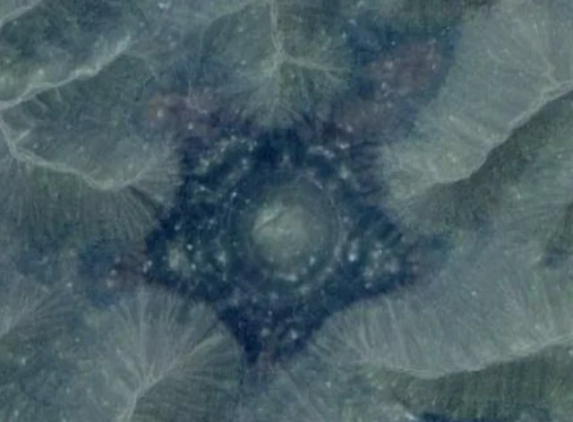

NISANIAN PENTAGRAM

Introduction
The Nisanian Pentagram is a natural geological formation located in the Oum Aouich region of Tindouf Province in southwestern Algeria, near the Moroccan border. Its precise coordinates are 29°14'23.0"N 7°02'15.0"W. Discovered in 2004 using satellite imagery from NASA and Google Earth, it was named "Nisanian" after Alex Nisanian, a geologist who first spotted it while studying maps. With a radius of approximately 150-200 meters, the pentagram appears almost perfectly shaped like a five-pointed star, sparking considerable online discussion ever since.
History
Theories
It is said to be part of a global "gateway network" that includes Stonehenge and the pyramids of Egypt, for the transfer of energy or souls.
Some have linked it to Freemasonry and the Illuminati; it is said to be the only earthly star out of 12 universal stars (11 marine), symbolizing 5 elements (water, fire, earth, air, metal) in ancient myths. The pentagram in Freemasonry and ancient Hermeticism actually symbolizes the four classical elements and spirit/ether (not "metal").
In some Arabic accounts, it is linked to Algerian-Moroccan border tensions, with claims that the Algerian army guards it because it is "holy land" or a secret military site.
Some believe the formation to be the site of an ancient temple or pagan ritual. Many civilizations passed through the Sahara Desert when it was habitable.
Some see it as part of "hidden history"; it is linked to the engravings of the Sefar caves in Algeria, as evidence that prehistoric civilizations such as Atlantis used it for electromagnetic energy.
It is rumored that sorcerers and practitioners of witchcraft from Morocco and Algeria make pilgrimages or secret trips to this site to perform their rituals. A Facebook post states that "Moroccan sorcerers talk about it a lot, and there are pilgrimages to it seeking some kind of energy," noting that the site is kept secret. Similarly, on Reddit, it is mentioned that "people believe it is a satanic temple and that witches from Morocco and Algeria visit it.
Some military experts have suggested that it may be a hidden surface-to-air missile (SAM) site, given its organized shape and remote location.The Algerian government is hiding it because it is a "parallel gateway," linked to theories of the "hollow earth" or "vortexes" (energy vortices).
Others link the shape to stars or unknown ancient cosmic rituals.
Some people link this formation to buried "Stargates," believing it to be a site of ancient advanced technology that allows travel between dimensions or planets.
Some claim that satellite images are digitally altered to hide an “energy glow” or “underground tunnels” that appear in infrared images.
The shape is linked to the five-pointed star in Judaism (since 300 BC), with the history of Jews in Algeria.
Research
Located in the heart of the arid desert, hundreds of kilometers from the nearest city (Tindouf), with no paved roads, temperatures reaching 50 degrees Celsius, strong winds, and sandstorms. Access requires a four-wheel drive vehicle and a water supply for several days.
The area is a sensitive military zone near the Moroccan border and is considered part of the Western Sahara conflict (with the Polisario Front and Western Sahara). Visitors need special permits from the Algerian authorities, which may be refused on the grounds of "national security."
The diameter of the middle circle is ≈ 366 meters, and this number is “sacred” because it is equal to the number of days in the lunar year × 1.01 approximately, or because 366 = 3+6+6 (sometimes a satanic sign for them!).
The five-pointed star is a very ancient astronomical symbol (it appears in Babylon, Egypt, the Levant, and even in ancient Maghrebi rock art).
The site is located at the intersection of global "ley lines" or on the "ground power grid" (Hartmann grid or Curry lines).